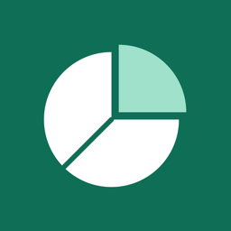
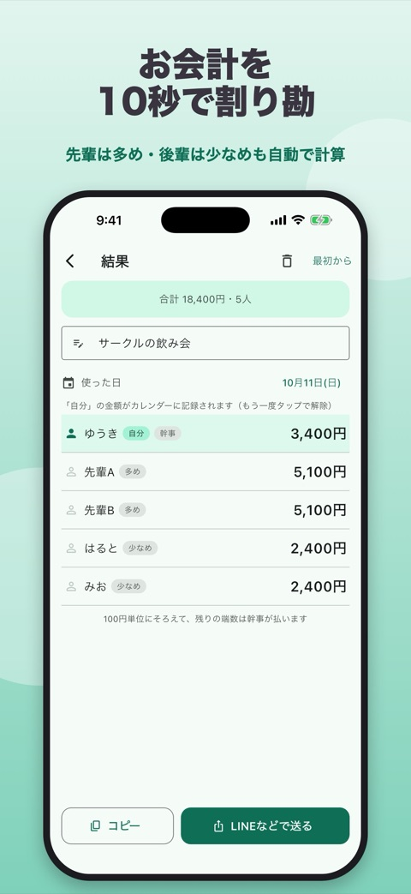
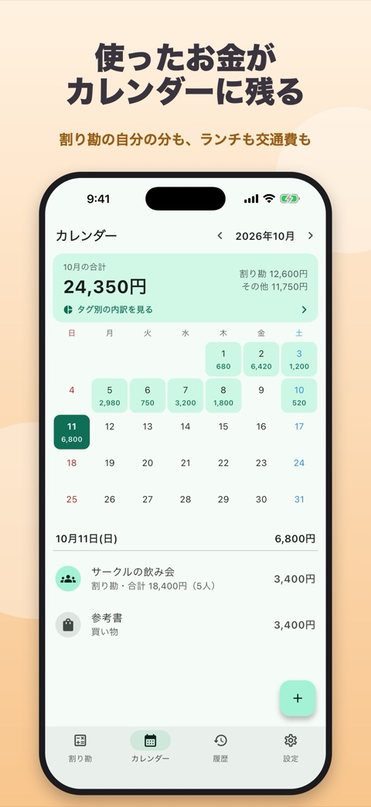
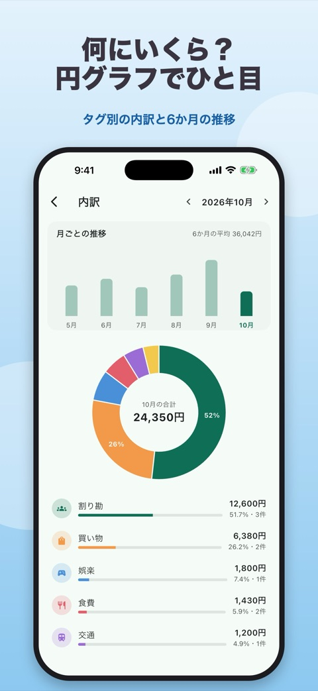
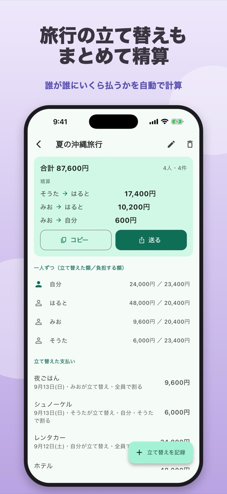

PieLog
家計簿と割り勘
飲み会の割り勘は、
10秒で。
割り勘と家計簿がひとつになったアプリです。飲み会や旅行で払ったお金も、ふだんのランチや交通費も、まとめてかんたんに記録できます。



できること
割り勘から毎月の出費の振り返りまで、ひとつのアプリで。
- 10秒で割り勘合計と人数を入れるだけ。100円単位にそろえて、端数は幹事がまとめて払う計算も自動。
- 傾斜先輩は多め、後輩は少なめ、金額指定も。合計がぴったり合うように計算します。
- 品目ごとに割る「ビールはAさんとBさん」「料理は全員」のように、頼んだ物ごとに分けられます。
- 旅行の立て替え精算誰が誰にいくら払えばいいかを、少ない回数で計算します。
- LINE などで送る結果はテキストか、見やすい表の画像で送れます。
- カレンダーに記録割り勘の「自分の分」は自動で記録。ランチや交通費は手入力、よく使う出費はワンタップ。
- 円グラフと推移タグ別の円グラフと6か月の推移で、何にいくら使ったかがひと目でわかります。
- そのほか外貨（レート手入力）、ホーム・ロック画面のウィジェット、ダークモード。
画面

サポート
入力したデータはすべてスマホの中だけに保存されます。登録やログインは必要ありません。
不具合やご要望は youki.kisimoto@gmail.com までお送りください。
プライバシーポリシー